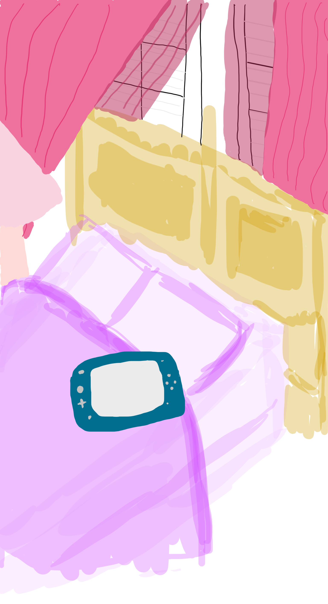
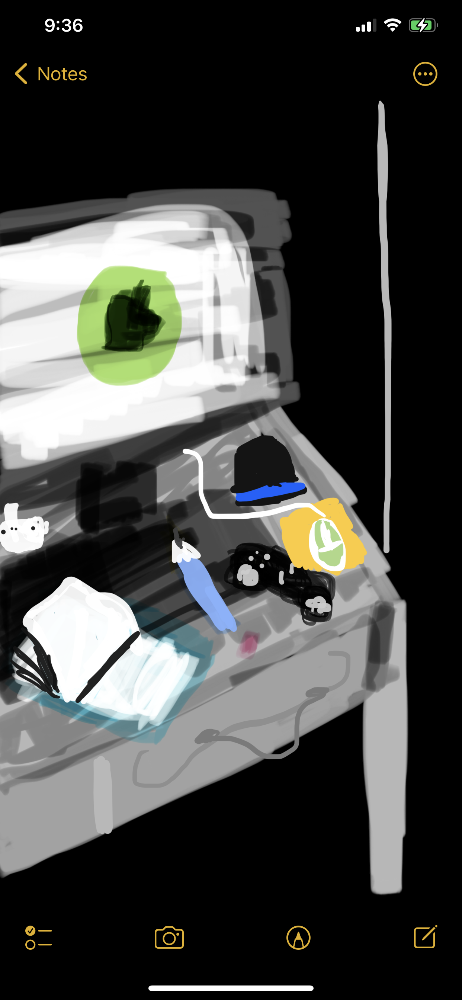
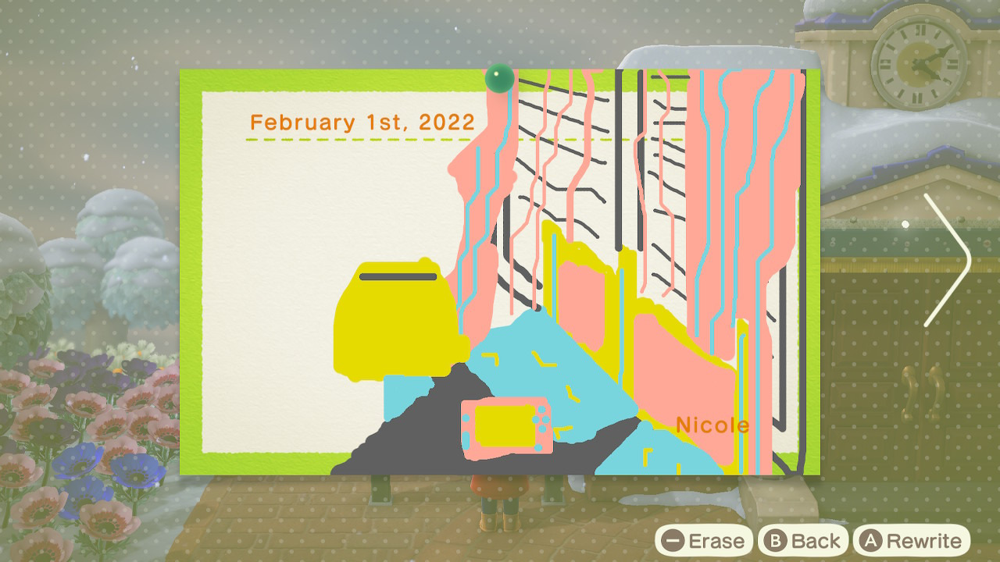

<!DOCTYPE html>
<html>
<head>
<tittle>Code Index</tittle>    
</html>
<title>
</title>
<link rel="stylesheet" href="style.css">
</head>

<div class="img" id="image"></div>

<body></body>
<h1>Jorunal entry for assignment 1</h1>

<p>
    Looking at my first draft for assignment 1, I tried to see what programs I can use with the apps that I have, so to do this I chose apps from notes apps on Iphone and the Animal Corssing New Horizons bulletin board.
    With the apps I found it difficult to use the notes apps and the bulletin board in Animal Crossing since these two programs aren't meant to be used for illustrative or photoshop use.
</p>


</body>
</html>

<body></body>
<head></head>
<tittle>second idea for assignment 1</tittle>
<p>
    As with the second idea for assignment 1, I also tried to use the notes app to create my artwork although I didn't realize that the colours would be inverse,
    which means that the colours would not look the same with day mode which is why the colours do look a bit different when shown in day mode which is the reason why the colours do not look 
    the same. So for future ideas, I've decided to consider another program to use for assignment 1.
</p>

<body></body>
<head></head>
<title>third idea for assignment 3</title>

<p>
    With the thrid idea for assignment three, With Animal Crossing, I found that it was a bit easier to work within the game but stil focused on the question on what I did duing
    the pandemic. Overall, I have decided to go ahead with using Animal crossing for this assignment and decided to futher explore my options within this game.
</p>

<h2>Assignment 1 images for draft 1 part 2</h2>
<body></body>
<head></head>


<p>
    Looking back on the images for my second draft for assignment 1, I realize that I still need to work on my final draft design for assignment 1 as I feel like for some of the responses
    that I got from my peers, some commented that they didn't get the message of what I did during the pamdemic, so as a result of that, I have decided to rethink my idea of what I did during
    the pandemic and look at other options and ideas that relate to the question. Aside from that, I am quite happy that I made progress with how I explored some of my options within the game and
    I am planning to do more for the final draft for the assignment.
</p>